<!-- Documentation Xclamation (c)1994-2000 AXENE contact axene@axene.org>
<html>
<head>
<title>Barre horizontale d'icônes &quot;Cadre&quot;</title>
</head>

<body BGCOLOR="#FFFFFF" BACKGROUND="Images/back.gif" TEXT="#000000">
<p ALIGN="right">


<p>
<br>
<br>
La barre d'icônes Cadre permet toutes les opérations
sur les cadres, de la création à leurs changements
de formes. Un cadre est une zone délimitée par un
tracé vectoriel qui va servir de support d'affichage à
une image, un dessin vectoriel ou à un texte. L'objet contenu dans
un cadre ne sera visible qu'à l'intérieur du contour
du cadre.
<br>
<br>
<hr>
<br>
<center>
<br>
<i><small>
Photo d'écran&nbsp;: Barre d'icônes Cadre
</i></small>
</center><p>
<br>
<hr>
<br>
<p>
<h3>Première section de la barre d'icônes&nbsp;:</h3>
<ul>
  <li>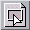
     <a NAME="handle_mode_icon">le
     premier bouton icône permet de passer Xclamation en mode
     '<a HREF="Frame_Selection_Modes.html#handles_mode"><b>sélection
     de cadre en mode poignées</b></a>'. Ce mode d'action est le plus
     souvent utilisé et est actif par défaut. Dans
     ce mode, il est possible de supprimer, déplacer, dupliquer,
     modifier les attributs et changer la taille d'une sélection
     de cadre.<br>
     Lorsque Xclamation est en
     '<a HREF="Frame_Selection_Modes.html#vertices_mode">sélection
     de cadre en mode sommets</a>',
     un clic sur le bouton du milieu de la souris permet de passer
     dans le mode poignées et inversement.
     </a><p>

  <li>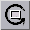 <a NAME="rotation_icon">le
     second bouton icône permet d'<b>appliquer une rotation</b> sur les
     cadres sélectionnés. Une marque indiquant le centre
     de la rotation apparaît (elle est placée par défaut au
     centre de la sélection).<p>
     Pour <b>déplacer le centre de la rotation</b>&nbsp;:
     <ol>
       <li> Cliquer sur le centre de rotation pour le saisir.
       <li> Déplacer la souris.
       <li> Cliquer pour le déposer sur son nouvel emplacement.
     </ol>
     Le déplacement du centre de rotation
     est affecté par le magnétisme.<br>
     Cette opération peut être annulée pendant l'étape
     2 en cliquant avec le bouton droit de la souris.
     <p>
     Pour <b>effectuer la rotation</b>&nbsp;:
     <ol>
       <li> Cliquer suffisamment loin du centre de rotation. Un axe allant de ce centre
	  à la position du curseur souris apparaît.
       <li> Déplacer le curseur souris. L'angle de rotation imprimé à
	  la sélection est égal à l'angle formé par l'axe
	  horizontal et l'axe allant du centre de rotation à la position du curseur
	  souris.
       <li> Cliquer pour fixer les cadres dans une position donnée.
       <li> Recommencer à l'étape 1. Pour quitter le mode rotation, cliquer sur l'icône 
	  de votre choix, ou cliquer n'importe où avec le bouton droit de la
	  souris pour revenir au mode 'sélection de cadre' précédent.
     </ol>
     Cette opération peut être annulée pendant l'étape
     2 en cliquant avec le bouton droit de la souris.<br>
     Pour que l'angle imprimé à la sélection de cadre soit
     multiple de 45°, il faut maintenir enfoncée la touche <tt>Shift</tt>.
     </a><p>

  <li>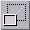 <a NAME="scaling_icon">le
     troisième bouton icône permet d'<b>effectuer une homothétie</b>
     sur les cadres sélectionnés. Une homothétie permet
     d'agrandir ou de rétrécir une figure géométrique
     sans déformation. 
     Une marque indiquant le centre
     de l'homothétie apparaît (elle est placée par défaut au
     centre de la sélection).<p>
     Pour <b>déplacer le centre de l'homothétie</b>&nbsp;:
     <ol>
       <li> Cliquer sur le centre de rotation pour le saisir.
       <li> Déplacer la souris.
       <li> Cliquer pour le déposer à son nouvel emplacement.
     </ol>
     Le déplacement du centre de l'homothétie
     est affecté par le magnétisme.<br>
     Cette opération peut être annulée pendant l'étape
     2 en cliquant avec le bouton droit de la souris.
     <p>
     Pour <b>effectuer l'homothétie</b>&nbsp;:
     <ol>
       <li> Cliquer suffisamment loin du centre de l'homothétie. Un axe allant de ce centre
	  à la position du curseur souris apparaît.
       <li> Déplacer le curseur souris. Le facteur d'agrandissement ou de 
	  rétrécissement
	  de l'homothétie dépend uniquement de la distance séparant le centre
	  et le curseur souris. Plus la distance est élevée, plus le facteur
	  homothétique est grand.
       <li> Cliquer pour fixer les cadres dans une position donnée.
       <li> Recommencer à l'étape 1. Pour quitter le mode homothétie, cliquer 
	  sur l'icône 
	  de votre choix, ou cliquer n'importe où avec le bouton droit de la
	  souris pour revenir au mode 'sélection de cadre' précédent.
     </ol>
     Cette opération peut être annulée pendant l'étape
     2 en cliquant avec le bouton droit de la souris.<br>
     </a><p>
</ul>
<p>
<br>
<h3>Seconde section de la barre d'icônes&nbsp;:</h3>
<ul>
  <li>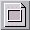 <a NAME="rectangle_icon">le
     premier bouton icône permet de <b>créer un cadre de
     forme rectangulaire</b>. 
     <ol>
       <li> Cliquer dans le plan d'affichage pour déposer un sommet
	  du rectangle.
       <li> Déplacer la souris pour étirer la forme du rectangle.
       <li> Cliquer pour déposer le sommet diagonalement opposé 
	  du rectangle afin de créer le cadre.
       <li> Recommencer à l'étape 1. Pour quitter le mode création, cliquer 
	  sur l'icône 
	  de votre choix, ou cliquer n'importe où avec le bouton droit de la
	  souris pour revenir au mode 'sélection de cadre' précédent.
     </ol>
     Cette opération est affectée par le magnétisme.
     Elle peut être annulée pendant l'étape
     2 en cliquant avec le bouton droit de la souris.<br>
     Pour <b>créer un carré</b>, presser la touche <tt>Shift</tt> 
     pendant l'opération.
     </a><p>

  <li>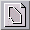 <a NAME="polygon_icon">le
     second bouton icône permet de <b>créer un cadre de forme
     polygonale quelconque</b>. 
     <ol>
       <li> Cliquer dans le plan d'affichage pour déposer le premier
	  point du polygone.
       <li> Déplacer la souris pour étirer une arête.
       <li> Cliquer pour déposer le sommet suivant. Répéter les étapes
	  2 et 3 autant de fois que nécessaire.
       <li> Cliquer sur le 1er sommet du polygone pour fermer la surface. Pour valider le polygone,
	  recliquer sur le 1er sommet, sinon reprendre à l'étape
	  1 pour ajouter un autre morceau ou pour trouer le polygone.
       <li> Recommencer à l'étape 1 pour créer un nouveau polygone. Pour quitter le 
	  mode création, cliquer sur l'icône 
	  de votre choix, ou cliquer n'importe où avec le bouton droit de la
	  souris pour revenir au mode 'sélection de cadre' précédent.
     </ol>

     Cliquer n'importe où avec le bouton du milieu de la souris en cours de 
     création équivaut 
     à cliquer deux fois sur le premier sommet du polygone (ferme et valide le polygone).<br>
     Cette opération est affectée par le magnétisme.
     Elle peut être annulée en cliquant avec le bouton droit de la souris
     avant la validation du polygone. <br>
     </a><p>

  <li> <a NAME="ellipse_icon">le
     troisième bouton icône permet de <b>créer un
     cadre de forme elliptique</b>. 
     <ol>
       <li> Cliquer dans le plan d'affichage pour déposer un sommet
	  du rectangle circonscrivant l'ellipse.
       <li> Déplacer la souris pour étirer la forme de l'ellipse.
       <li> Cliquer pour déposer le sommet diagonalement opposé 
	  du rectangle circonscrivant l'ellipse afin de créer le cadre.
       <li> Recommencer à l'étape 1. Pour quitter le mode création, cliquer 
	  sur l'icône 
	  de votre choix, ou cliquer n'importe où avec le bouton droit de la
	  souris pour revenir au mode 'sélection de cadre' précédent.
     </ol>
     Cette opération est affectée par le magnétisme.
     Elle peut être annulée pendant l'étape
     2 en cliquant avec le bouton droit de la souris.<br>
     Pour <b>créer un cercle</b>, presser la touche <tt>Shift</tt> 
     pendant l'opération.
     </a><p>
</ul>

<p>
<br>
<h3>Troisième section de la barre d'icônes&nbsp;:</h3>
Pour tous les outils de cette section, il faut <i>au moins deux
cadres sélectionnés</i> pour pouvoir y accéder.
<ul>
  <li> <a NAME="add_icon">le premier
     bouton icône permet d'<b>additionner les surfaces</b> des cadres 
     sélectionnés pour ne former qu'un seul nouveau cadre.<br>
     L'angle du cadre final sera égal
     à celui du cadre le plus en dessous de la sélection.<br>
     Si un cadre contient un dessin vectoriel, un texte ou une image
     (dans cet ordre de priorité), cet objet sera conservé
     pour remplir le cadre final. Si plusieurs cadres de la sélection
     sont remplis, seul l'objet de plus forte priorité sera
     conservé, les autres seront détruits. 
     <br> 
     <i>Pour des raisons
     de précision de calcul, il vaut mieux éviter d'ajouter
     des cadres ayant des arêtes exactement confondues.</i>
     </a><p>

  <li>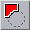 <a NAME="substract_icon">le
     second bouton icône permet de <b>soustraire les surfaces</b> des cadres 
     sélectionnés pour ne former qu'un seul nouveau cadre.
     Le cadre final sera le cadre le plus en dessous de
     la sélection auquel sera ôtée son intersection
     avec l'union des surfaces des autres cadres de la sélection.
     <br>
     L'angle du cadre final sera égal
     à celui du cadre le plus en dessous de la sélection.<br>
     Si un cadre contient un dessin vectoriel, un texte ou une image,
     (dans cet ordre de priorité), cet objet sera conservé
     pour remplir le cadre final. Si plusieurs cadres de la sélection
     sont remplis, seul l'objet de plus forte priorité sera
     conservé, les autres seront détruits. 
     <br> 
     <i>Attention, si le cadre le plus en dessous de la sélection est entièrement
     recouvert par les autres cadres de la sélection, l'utilisation
     de ce bouton va détruire tous les cadres de la sélection.<br>
     Pour des raisons de précision de calcul, il vaut mieux
     éviter de soustraire des cadres ayant des arêtes
     exactement confondues.</i>
     </a><p>

  <li> <a NAME="fusion_icon">le
     troisième bouton icône permet d'<b>additionner les
     surfaces en détruisant les intersections</b> des cadres 
     sélectionnés pour ne former qu'un seul nouveau cadre.
     <br>
     L'angle du cadre final sera égal
     à celui du cadre le plus en dessous de la sélection.<br>
     Si un cadre contient un dessin vectoriel, un texte ou une image
     (dans cet ordre de priorité), cet objet sera conservé
     pour remplir le cadre final. Si plusieurs cadres de la sélection
     sont remplis, seul l'objet de plus forte priorité sera
     conservé, les autres seront détruits. 
     </a><p>

  <li> <a NAME="outline_icon">le
     quatrième bouton icône permet de soustraire au cadre le plus
     en dessous de la sélection, l'union des surfaces des autres
     cadres de la sélection. En d'autres termes, tous les cadres
     sélectionnés du dessus vont <b>laisser une empreinte</b>
     dans le cadre le plus en dessous de la sélection.
     Ce bouton agit comme le second
     de cette section, excepté le fait que les cadres ne sont
     pas fusionnés ensembles. Cet outil est particulièrement
     utile pour faire du détourage.
     </a><p>

  <li> <a NAME="align_icon">le
     cinquième bouton icône permet d'<b>aligner les cadres</b>
     d'une sélection. Ce bouton appelle la boîte de dialogue
     '</a><a HREF="Box_Align.html">Alignement de cadres</a>'.

</ul>
<p>
<br>
<h3>Quatrième section de la barre d'icônes&nbsp;:</h3>
<ul>
  <li> <a NAME="vertex_mode_icon">le
     premier bouton permet de passer Xclamation en 
     '<a HREF="Frame_Selection_Modes.html#vertices_mode"><b>sélection
     de cadre en mode sommets</b></a>'. Dans ce mode, il est possible de supprimer,
     déplacer, dupliquer, modifier les attributs et déplacer
     un sommet ou une arête d'une sélection de cadre.<br>
     Lorsque Xclamation est en sélection de cadre en mode poignées,
     on peut cliquer sur le bouton du milieu de la souris pour passer
     dans le mode sommets et inversement.
     </a><p>
  <li>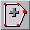 <a NAME="add_vertex_icon">le
     second bouton icône permet d'<b>ajouter des sommets</b> aux cadres
     sélectionnés.<br>
     Trois cas de figures peuvent se présenter&nbsp;:
     <ul>
       <li> Insérer un point sur l'arête d'un cadre. Pour cela, cliquer 
	  sur l'arête. Lorsque le curseur souris est sur une arête, il prend
	  la forme d'un cercle.
       <li> Rajouter une partie extérieure, ou trouer un cadre. 
	  <ol>
	    <li> Cliquer à l'endroit où insérer la partie.
	    <li> Déplacer la souris pour étirer l'arête.
	    <li> Cliquer pour poser le point suivant, recommencer les étapes
	       2 et 3 autant de fois que nécessaire.
	    <li> Cliquer sur le premier point de la nouvelle partie du cadre pour
	       la fermer.
	    <li> Recommencer à l'étape 1 pour créer une nouvelle partie 
	       ou insérer un point. 
	       Pour quitter le mode insertion de point, cliquer sur l'icône 
	       de votre choix, ou cliquer n'importe où avec le bouton droit de la
	       souris pour revenir au mode 'sélection de cadre en mode sommets'.
	  </ol>
       <li> Transformer une ligne en polygone. Si votre cadre ne comprend que 2 points,
	  c'est une ligne. 
	  <ol>
	    <li> Cliquer sur un des deux sommets.
	    <li> Déplacer la souris pour étirer l'arête.
	    <li> Cliquer pour poser le point suivant, recommencer les étapes
	       2 et 3 autant de fois que nécessaire.
	    <li> Cliquer sur l'autre des deux sommets pour fermer le polygone.
	    <li> Pour quitter le mode insertion de point, cliquer sur l'icône 
	       de votre choix, ou cliquer n'importe où avec le bouton droit de la
	       souris pour revenir au mode 'sélection de cadre en mode sommet'.
	  </ol>
     </ul>
     Les sommets ajoutés sont affectés par le magnétisme.
     </a><p>

  <li> <a NAME="del_vertex_icon">le
     troisième bouton icône permet de <b>supprimer un sommet</b>
     du contour d'un des cadres sélectionnés. Pour supprimer
     un sommet, placer le pointeur de la souris sur
     le point à détruire et cliquer sur le bouton gauche
     de la souris. Si on supprime tous les sommets d'un cadre, le cadre
     est détruit. Pour repasser rapidement Xclamation en 'sélection
     de cadre en mode sommets', il est possible d'appuyer sur le bouton
     droit de la souris.
     </a><p>
</ul>

<p>
<br>
<h3>Cinquième section de la barre d'icônes&nbsp;:</h3>
Tous les cadres sont positionnés sur des plan différents.
Avec ces outils, il est possible de modifier l'ordre des plans pour
superposer les cadres à votre guise.
<ul>
  <li>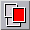 <a NAME="foreground_icon">le
     premier bouton icône permet de passer les cadres sélectionnés
     au <b>premier plan</b>, c'est-à-dire au-dessus de tous les autres.
     </a><p>
  <li>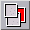 <a NAME="background_icon">le
     second bouton icône permet de passer les cadres sélectionnées
     au <b>dernier plan</b>, c'est-à-dire en dessous de tous les autres.
     </a><p>
  <li>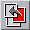 <a NAME="forward_icon">le
     troisième bouton icône permet de <b>rapprocher d'un
     plan</b> les cadres sélectionnés, c'est-à-dire
     d'échanger le plan avec le cadre juste au-dessus.</a><p>
  <li>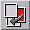 <a NAME="backward_icon">le
     quatrième bouton icône permet d'<b>éloigner d'un
     plan</b> les cadres sélectionnés, c'est-à-dire
     d'échanger le plan avec le cadre juste en dessous. </a><p>
</ul>

<p>
<br>
<h3>Sixième section de la barre d'icônes&nbsp;:</h3>
<ul>
  <li> <a NAME="lock_icon">le
     bouton icône permet de verrouiller les cadres sélectionnés.
     L'action de <b>verrouiller un cadre</b> interdit tout déplacement
     et toute modification de ce cadre. Il suffit qu'un cadre soit
     verrouillé dans une sélection pour rendre toute
     cette sélection inaltérable.<br>
     Le curseur souris prend
     la forme d'un sens interdit lorsqu'il pointe sur un cadre sélectionné
     et verrouillé. 
     <br> Ce bouton icône est activé
     si l'un des cadres de la sélection est verrouillé.
     Pour <b>déverrouiller</b> une sélection de cadre, il suffit
     de désactiver ce bouton.
     </a><p>
</ul>

<br>
<hr>
<p ALIGN="right">
<p>
</body>
</html>

